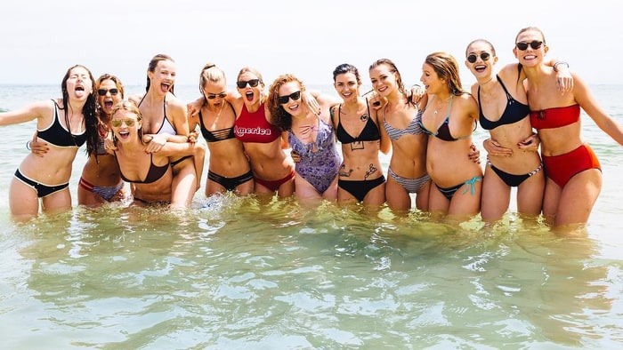

RSC Swimming Club has a number of Squads.
These are defined as detailed below:
Tadpoles - This is a beginner group for the under 10 year olds learning to swim
Frogs - This is for the more mature learner wanting to take up swimming
Minnows - This is the first of the skill development for those who can swim
Piranahs - This is for the more serious swimmer competing at District level
Sharks - For the serious competitor
Synchro - This is our Synchronised Swimming Squad led by one of the top coaches in the country
Masters - This squad is for swimmers aged over 25
There is a place for any swimmer at any level to join a squad and take part
